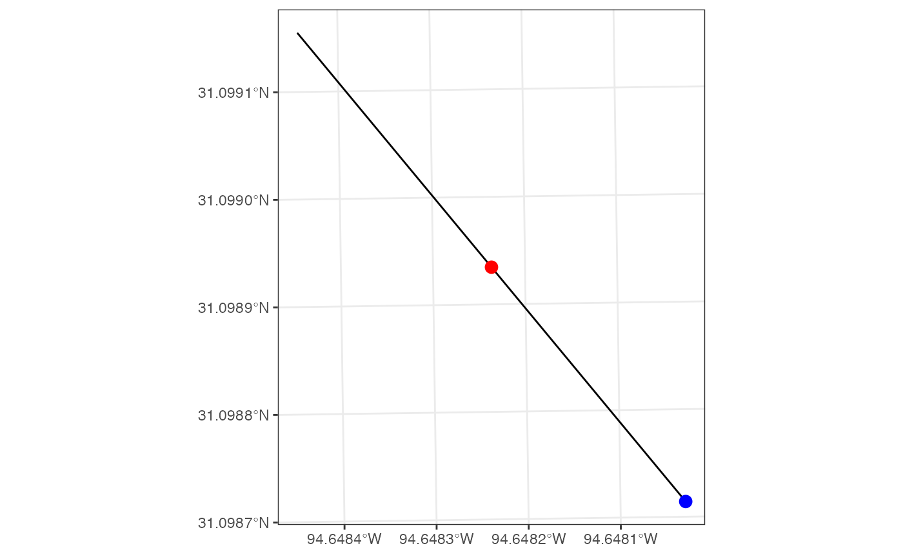
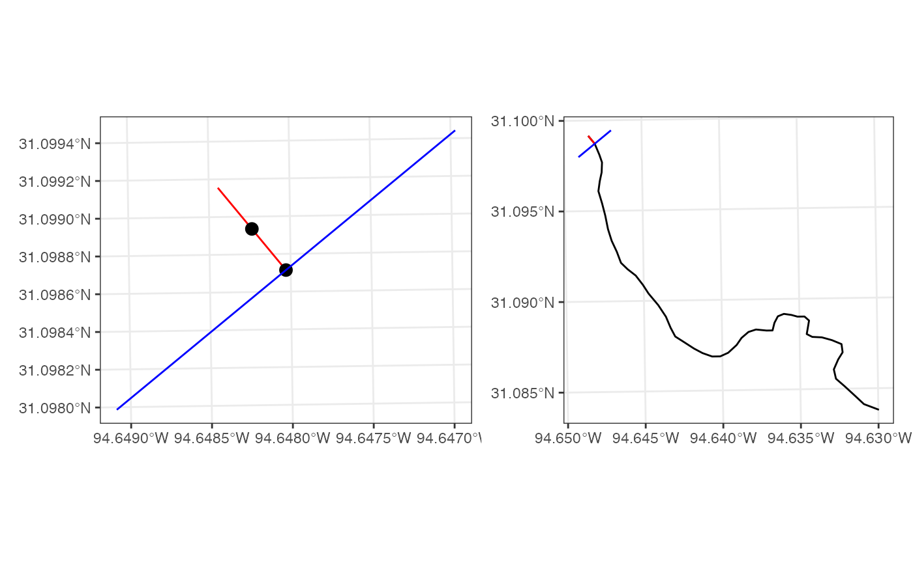
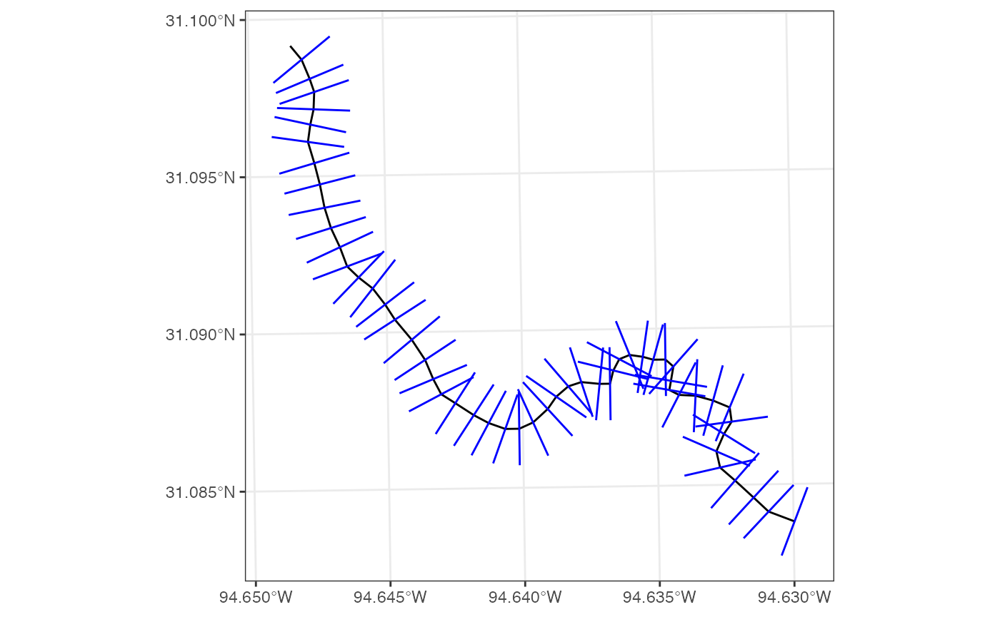
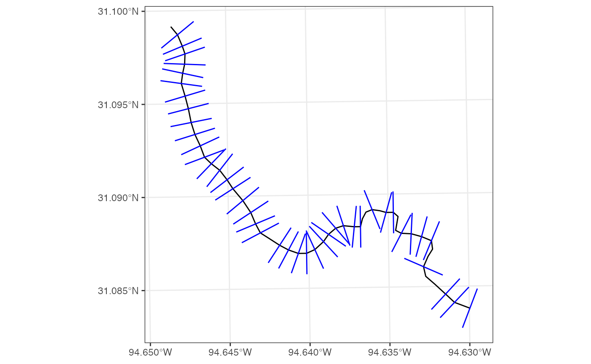
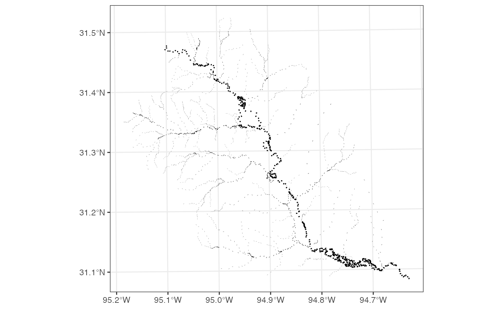
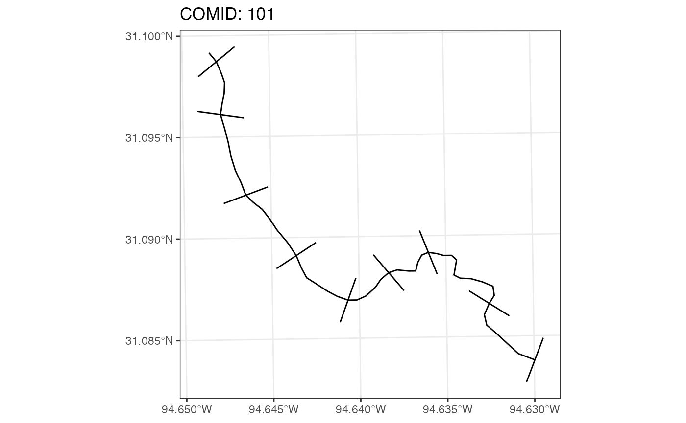
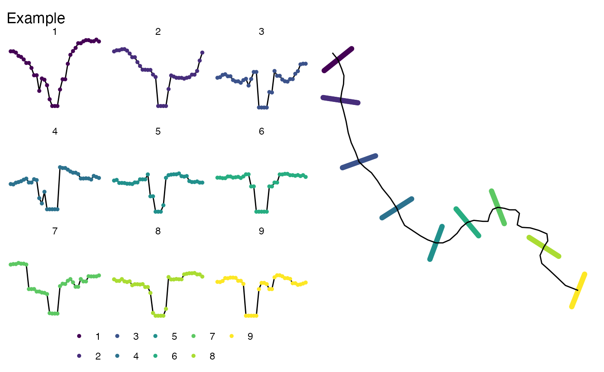

NOAA OWP Cross Section Generator
Mike Johnson
Lynker, NOAA-Affiliatecross_section_generator.RmdIntroduction
The need to cut transects of elevation along a set of lines (e.g. river or road networks) is a fairly common task with an unsatisfying number of off the shelf solutions. For our particular need at OWP we need to cut cross sections across the entire CONUS river network to provide much needed information to flood mapping and hydrologic modeling tasks. This document shows some of the initial efforts towards doing this at that scale. For small sets of cross sections the tools developed by Rich McDonald (e.g. nhdplusTools::get_xs_point) should be preferred.
Prep Network
Here we are loading the Upper Tributary of COMID 101. In total there are 325 flowlines with a total length of 942.3 km.
We also prescribe a floodplain width by computing the estimated bank full width (from literature based power-law) and multiplying it by 5. This assumes 2 parts left-bank, 1 part in channel (bank full), 2 parts right-bank. This will be important latter!
Algorithm Walk Through:
Our algorithm works by generating a set of edges from a single line string, and computing normal vector, that are transformed with a series of afline transformations. To illustrate this lets start with a single flowline:
linestring = filter(network, comid == 101)Step 1: Explode Linestring into edges:
# sf --> geos object
line <- as_geos_geometry(linestring)
# extract vertices
vertices <- wk_vertices(line)
# Use vertices to reconstruct line segments
edges <- as_geos_geometry(
wk_linestring(
vertices[c(1, rep(seq_along(vertices)[-c(1, length(vertices))], each = 2), length(vertices))],
feature_id = rep(seq_len(length(vertices) - 1), each = 2)
)
)Step 2: Define Edge Mid and End Point
The next steps are down for each individual edge in the exploded linestring:
# Starting with just the first edge
edge <- edges[1]
# Define a width of desired cross section
width <- linestring$cs_width
# find the midpoint
midpoint <- geos_interpolate_normalized(edge, 0.5)
# find the end point
ep <- geos_point_end(edge)
Step 3: Define Cross Section at end Point
To generate a cross section that passes through the end point we need to steps
Define a normal edge
3 transformations to define a normal edge:
affine_translate: define the coordinate offsets in the x, y direction as the negative value of the X and Y coordinate of the edge midpointaffine_scale: apply an X scale factor of 1/length of the edge, and a Y scale factor of 1/length of the edgeRotatethe new line 90 degrees
normal_edge <- wk_transform(edge,
wk_affine_compose(
wk_affine_translate(dx = -geos_x(midpoint), dy = -geos_y(midpoint)),
wk_affine_scale(1 / geos_length(edge), 1 / geos_length(edge)),
wk_affine_rotate(90)
))Define the cross sections
2 transformations are needed to define a cross section:
affine_scale: apply an X scale factor of the desired width, and a Y scale factor of the desired widthaffine_translate: define the coordinate offsets in the x, y direction as the negative value of the X and Y coordinate of the edge end point
Lastly, the CRS of the original line is reassigned.
cs = wk_set_crs(wk_transform(
normal_edge,
wk_affine_compose(
wk_affine_scale(width, width),
wk_affine_translate(geos_x(ep), geos_y(ep))
)), wk_crs(line))
Cut a Full Flowline
Using the above logic, we can write a function that generates a series of cross sections for each edge in the line string:
# Make a function:
cut_transect = function(edge, width){
midpoint <- geos_interpolate_normalized(edge, 0.5)
ep <- geos_point_end(edge)
normale_edge <- wk_transform(edge,
wk_affine_compose(
wk_affine_translate(dx = -geos_x(midpoint), dy = -geos_y(midpoint)),
wk_affine_scale(1 / geos_length(edge), 1 / geos_length(edge)),
wk_affine_rotate(90)))
wk_set_crs(wk_transform(
normale_edge,
wk_affine_compose(
wk_affine_scale(width, width),
wk_affine_translate(geos_x(ep), geos_y(ep))
)
), wk_crs(edge))
}
system.time({
all = vec_c(!!!Map(cut_transect, edges, width = linestring$cs_width))
})## user system elapsed
## 0.111 0.005 0.152
OK that’s pretty good! But there are a few things I don’t like. From here on out we must enforce the following two conditions:
Condition 1: Cross sections should not cross each other
Condition 2: A single cross section should not cross a given reach more then once
Predicates like st_intersect cannot be run at the end
without wiping all cross-sections that intersect. So, we need
to implement some logic to enforce these:
get_transects = function(edges, line, width){
if(length(width) != length(edges)){
width = rep(width[1], length(edges))
}
transects <- geos_empty()
for(i in 1:length(edges)){
tran = cut_transect(edges[i], width[i])
# If a MULTIPOINT, then it crosses more the once
if(geos_type(geos_intersection(tran, line)) == "point") {
# Ensure that there are no intersections with previously computed cross sections
if (!any(geos_intersects(tran, transects))) {
transects <- vec_c(transects, tran)
}
}
}
transects[!geos_is_empty(transects)]
}
system.time({
transects = get_transects(edges, line, width = 250)
})## user system elapsed
## 0.230 0.013 0.353Awesome! We gained just a fraction of time while ensuring a set of valid cross sections are generated.

Flow Network
OK, so we have gone from a single edge, to a full flowline. Now - how about a full network! Again, this requires looping over all flowlines. Additionally we add a few new items:
- The
numargument allows a user to restrict the number of cross sections desired per flowline. - The
idargument allows a user to specify the identifier column of the input. If provided these will be assigned as the “hy_id” in the output. If not prescribed, a 1:n() index will be added. - The outputs will also have a 1:n() cs_id describing the ordered set of cross sections where 1 is the most upstream and n is the most downstream.
- Lastly, a final pass is made to remove all cross sections that intersect with cross section from a different flowline.
cut_cross_sections = function(net, id = NULL, widths = NULL, num = NULL){
ll = list()
if(length(widths) != nrow(net)){
widths = rep(widths[1], nrow(net))
}
for(j in 1:nrow(net)){
line <- as_geos_geometry(net[j,])
vertices <- wk_vertices(line)
edges <- as_geos_geometry(
wk_linestring(
vertices[c(1, rep(seq_along(vertices)[-c(1, length(vertices))], each = 2), length(vertices))],
feature_id = rep(seq_len(length(vertices) - 1), each = 2)
)
)
if(!is.null(num)){
edges = edges[as.integer(seq.int(1, length(edges), length.out = num))]
}
ll[[j]] = get_transects(edges, line, widths[j])
}
ids_length = lengths(ll)
ll = st_as_sf(Reduce(c,ll))
if(!is.null(id)){
ll$hy_id = rep(net[[id]], times = ids_length)
} else {
ll$hy_id = rep(1:nrow(net), times = ids_length)
}
ll[lengths(st_intersects(ll)) == 1, ] %>%
group_by(hy_id) %>%
mutate(cs_id = 1:n()) %>%
ungroup()
}
system.time({
oo = cut_cross_sections(net = network,
id = "comid",
widths = network$cs_width,
num = 10)
})## user system elapsed
## 10.364 0.433 11.889
Transects to 3D channel
To turn the extracted transect set into “3D” cross sections, we need to define a set number of points to sample along each line, and then use those to extract an elevation from a DEM. Here, we use a VRT file of the 10m 3DEP elevation data that we produced for the National Map with support from the 3DEP team.
library(terra)
points_per_cs = 35
elev_url = "/vsicurl/https://prd-tnm.s3.amazonaws.com/StagedProducts/Elevation/13/TIFF/USGS_Seamless_DEM_13.vrt"
extract_pt_val = function(rast, pts){ extract(rast, project(vect(pts), crs(rast)))[,2] }
system.time({
cs_pts =
st_set_geometry(oo, st_line_sample(oo, points_per_cs)) %>%
st_cast("POINT") %>%
st_transform(st_crs(rast(elev_url))) %>%
mutate(Z = extract_pt_val(rast(elev_url), .)) %>%
group_by(hy_id, cs_id) %>%
mutate(pt_id = 1:n()) %>%
ungroup()
})## user system elapsed
## 9.671 0.921 34.639
Reach Addressing
A key for hydrologic locations is a linear reference that describes the percentage along a reach a location sits. To reference the center of each cross section, we can use the flowline indexing tools in nhdplusTools:
system.time({
# Find middle point of each cross section
tmp = cs_pts %>%
group_by(hy_id, cs_id) %>%
arrange(pt_id) %>%
slice(ceiling(n()/2)) %>%
ungroup() %>%
st_transform(5070)
# Add the needed information to our network object, and fine flowline index
xx = left_join(network,
get_vaa(c("tomeas", "frommeas", 'reachcode'), updated_network = TRUE),
by = c("comid")) %>%
get_flowline_index(tmp) %>%
mutate(cs_id = tmp$cs_id[id], id = NULL) %>%
rename(hy_id = COMID)
# add new information of cs_pts and rearrange columns
cs_pts = left_join(cs_pts, xx, by = c("hy_id", "cs_id")) %>%
select(hy_id, cs_id, pt_id, everything())
})
head(cs_pts)Channel Classifiction
OK so now we have cut cross sections along network, sampled them and extracted depths, and addressed them to the hydrologic network! Now, we want to to assign a classification to each point marking it as “right_bank”, “in_channel” and “left_bank”.
assign_class = function(Z, ratio = 1/5){
# The change in elevation across the cross section
dY = c(diff(Z), 0)
# devise a threshold for each section based on the prescribed ratio
thres = ratio * length(Z)
# Assume the left side is 2* threshold
la = 2*thres
# Assume the channel is the left edge plus one part.
ca = la:(thres + la)
# Assume the channel sits within the middle part + or minus a part
mid_sec = Z[(2*thres):(length(Z)-2*thres)+1]
mid = floor(median(which(Z == min(mid_sec) )))
if(mid < 2*thres | mid > 2 * thres){
mid = min(mid_sec)
mid = floor(median(which(mid_sec == mid))) + 2*thres
}
lb = which.min(dY[(mid-thres):mid]) + (mid-thres) - 2
rb = which.max(dY[(mid):(mid+thres)]) + mid + 1
class = rep("in_channel", length(Z))
class[1:lb] = "left_bank"
class[rb:length(Z)] = "right_bank"
if(length(class) != length(Z) | dim(table(class)) != 3){
class = c(rep("left_bank", 2*thres),
rep('in_channel', thres),
rep("right_bank", 2*thres))
}
class
}
system.time({
cs_pts = cs_pts %>%
group_by(hy_id, cs_id) %>%
mutate(class = assign_class(Z, ratio = 1/flood_plain_sections)) %>%
ungroup()
})
mapview::mapview(network)Channel bottom alignment and bank smoothing
Lastly, for a successful routing implementation, we need to ensure that the bottom of each cross section is lower then or equal to that one upstream. Here we will traverse down the network making sure this condition is met, and, in cases where it isn’t, we will lower the in channel portion of the cross section to make it so: